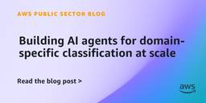

AWS Public Sector Blog
フィード

How eduroam empowers its community through real-time analytics with Amazon Quick Sight
AWS Public Sector Blog
For the more than 2,800 administrators across approximately 1,200 participating institutions in the US, that means access to near daily provided to them through Amazon Quick Sight on Amazon Web Services (AWS) by the eduroam team at Internet2. However, this wasn’t always the case. This post walks through how the eduroam team modernized their data reporting pipeline, the architecture behind it, and the impact it's had on institutional engagement.
2日前

The NBDC sandbox: How the Masonic Institute for the Developing Brain built a secure cloud environment to accelerate brain development research with AWS
AWS Public Sector Blog
The Adolescent Brain Cognitive Development (ABCD) and HEALthy Brain and Child Development (HBCD) studies, the largest longitudinal brain development studies in U.S. history, are producing transformative insights, but the data driving those discoveries require greater security and have grown so large that many research teams struggle to access and analyze them.
3日前

TOLAP: Closing the data-object security gap in AI agent architectures 1
1
AWS Public Sector Blog
Every major agent framework has a security model for this. Amazon Web Services (AWS), Microsoft, and Google each ship agent solutions with authentication and credential management built in. Amazon Bedrock Agents, for example, enforces AWS Identity and Access Management (IAM)-based authorization on which AWS Lambda functions, Amazon Simple Storage Service (Amazon S3) buckets, and Amazon Bedrock Knowledge Bases an agent might invoke.
3日前

How South Carolina’s Talking Book Services uses Amazon Connect to bring readers closer to the stories they love 1
AWS Public Sector Blog
Learn how South Carolina State Library's Talking Book Services has been putting books into the hands—and ears—of people with print disabilities since 1931. Now, with the help of Amazon Connect, the small team of reader advisors serving 4,200 patrons across the state is making those deeply personal connections easier than ever.
5日前

Building AI agents for domain-specific classification at scale 1
AWS Public Sector Blog
This post shows how public sector and enterprise teams can build an agentic AI-powered classification system on Amazon Web Services (AWS) using the Strands Agents SDK, Amazon Bedrock, and serverless services. You will learn the architecture, the agent workflow, and how to implement this system using the Strands Agents SDK.
7日前

How Rize Credit Union built a serverless data lake on AWS to become its own source of truth
AWS Public Sector Blog
Credit unions exist to serve members, not to run data centers. Every hour our team spends on infrastructure is an hour not spent on the question a member actually cares about: “Is my money safe, is my experience easy, and is my credit union on my side?” Moving to a serverless, managed-service foundation on Amazon Web Services (AWS) means our engineers spend their time on membership modeling, fraud analytics, and AI augmentation instead of capacity planning.
10日前
Accelerate regulatory package processing with agentic AI on AWS and Databricks
AWS Public Sector Blog
Learn how Amazon Web Services (AWS) offers a fundamentally different approach. By deploying agentic AI—specialized AI agents that work collaboratively to analyze, validate, and route documentation—federal agencies can dramatically accelerate conformity processing while maintaining or improving quality and compliance standards.
10日前
How Iowa State University’s Translational AI Center is feeding the future with generative AI and computer vision on AWS
AWS Public Sector Blog
The Translational AI Center (TrAC) at Iowa State University is a pre-competitive research hub that bridges the gap between academic AI breakthroughs and real-world deployment. With over 70 affiliated faculty spanning seven ISU colleges, TrAC breaks down disciplinary silos and organizes research across thematic areas, including food and energy systems, healthcare, autonomy, materials design, and AI ethics.
11日前
How CGI Federal and AWS delivered 50% performance gains and 6-month ATO for GSA’s financial management system
AWS Public Sector Blog
The United States General Services Administration (GSA) Pegasys Financial Management program plays a vital role in managing the agency's financial operations, processing hundreds of billions of dollars in transactions annually for GSA and 40 partner agencies, boards, and commissions. When GSA needed to modernize the infrastructure supporting this mission-critical system, the agency faced a significant challenge. It needed to migrate 30 terabytes of production data, over 100 virtual machines, and 70 external system interfaces to the cloud—all within 6 months while maintaining uninterrupted availability.
12日前
AWS and Wiz accelerate resilience for academic medical centers
AWS Public Sector Blog
In this post, we discuss how AWS and Wiz support security and resilience for AMCs to help keep the focus more on patient care while maintaining a robust, secure operating environment.
18日前
Accelerate IRAP readiness with AWS and Wiz
AWS Public Sector Blog
As organisations modernise to meet the evolving expectations of the Australian Government, delivering secure, cloud-based services has become a commercial and operational necessity. This transformation brings a critical challenge: maintaining a hardened security posture while aligning to the Information Security Registered Assessors Program (IRAP) assessment requirements and priorities.
18日前
What does it cost to answer one question? Measuring per-request cost in agentic workloads
AWS Public Sector Blog
The cost dimensions of agentic workloads on Amazon Web Services (AWS) are invisible to many organizations beginning their agentic journey. It's straightforward to track tokens consumed because this dimension translates directly to your bill. But most organizations can't determine the cost per request or the cost to answer a single user question. Without understanding the cost to answer a single user question, organizations are blind to cost issues. In this post, I talk about how to gain visibility into your agentic costs, and I identify three things you can do to better control your costs.
18日前
Validating infrastructure as code against FedRAMP 20x: Shift-left compliance
AWS Public Sector Blog
Catching a compliance violation in production is expensive. Catching it in a pull request is nearly free. In this post, we demonstrate how to build a multi-tool infrastructure as code (IaC) validation pipeline that checks AWS CloudFormation templates and Terraform configurations against Federal Risk and Authorization Management Program (FedRAMP) 20x Key Security Indicators (KSIs) before deployment. Combined with the preventive controls from Preventive controls for FedRAMP 20x: Using SCPs and guardrails to enforce KSIs and the methods to be described in future blog posts, this creates a full-lifecycle compliance architecture.
18日前
AI-powered customs duties classification, assessment, and collection for international mail shipments to the United States
AWS Public Sector Blog
Learn how CBP has selected Amazon PreDepart as a trade solutions candidate under the Commercial Solutions Opening Pilot (CSOP) program. As part of this selection, CBP also approved Amazon Customs and Trade (ACT) as a Qualified Party, an entity authorized to collect and remit customs duties on behalf of shippers - for international mail shipments to the United States.
23日前
Accelerating government FinOps with Amazon Quick
AWS Public Sector Blog
In this post, we explore how Peraton created a solution for centralized cloud financial management solution on AWS and how Amazon Quick can accelerate insights for large government entities.
23日前
AWS announces up to $1 billion in cloud credits to accelerate U.S. Intelligence Community modernization
AWS Public Sector Blog
Learn how Amazon Web Services (AWS) has announced the Intelligence Community Accelerated Modernization Framework (ICAMF)[OB2.1], a landmark program committing up to $1 billion in available credits to accelerate cloud migration and modernization across the U.S. Intelligence Community. ICAMF provides outcome-based credits through October 2030, giving Intelligence Community agencies a compelling, long-term incentive to accelerate their cloud journey.
24日前
Accelerating autonomous system innovation with Project MAVERICK field testing
AWS Public Sector Blog
Real missions break perfect prototypes. Through Project MAVERICK (Mission Autonomy Versatile Rapid Innovation and Capabilities Kit), Amazon Web Services (AWS) confronts this reality head-on—bringing cloud capabilities directly into the field to test autonomous systems where it matters most.
24日前
Delivering on the Promise of OneGov: Federal Agencies Modernize with OneGov — and AWS Expands its Program to ISV Partners
AWS Public Sector Blog
In August 2025, Amazon Web Services (AWS) secured a OneGov agreement with GSA, to provide up to $1 billion in savings to accelerate cloud adoption, modernization, and training across the federal government. Less than a year later, agencies and partners are leveraging this program to make meaningful progress on cybersecurity and cloud migrations.
24日前
From Lab to Bedside: Five Years of AI-Powered Health Breakthroughs and What Comes Next
AWS Public Sector Blog
This blog discusses how AWS has supported more than 600 customers with over $90 million of technology to innovate in health. Forty-four percent of these customers employed AWS AI services, seeding AI innovation across the global health landscape and proving that cloud-powered AI can improve health and wellness for all. This blog highlights nine of those organizations deploying AI to save lives today, culminating in AWS’s largest single social impact investment in health: a landmark technology collaboration with the Fleming Initiative to build the world’s first AI-powered platform for combating antimicrobial resistance.
24日前
5 pillars to stabilize your AI product development strategy
AWS Public Sector Blog
In this blog, learn how five durable pillars—full-stack builders, parallel decision-making, context as a competitive moat, disciplined prioritization, and trust at AI speed—can stabilize your AI product development strategy amid rapid technological change. Drawn from the AWS Product Acceleration team's work with AI-native product leaders, these principles help organizations cut through the noise and convert AI-driven speed into real customer value rather than chaos.
25日前